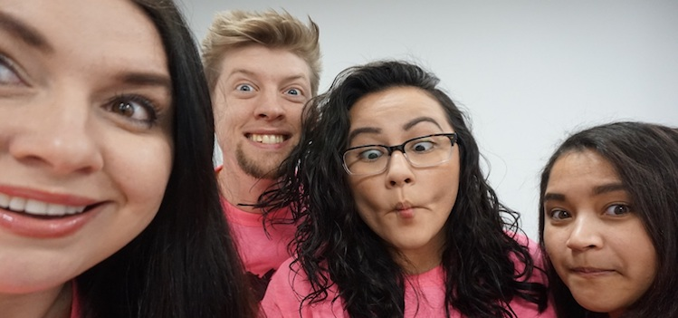
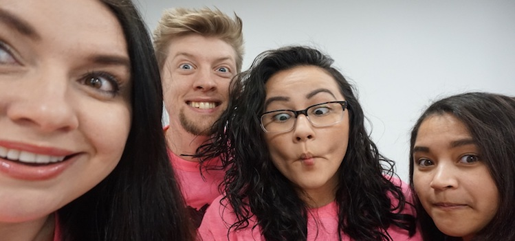

.png)

PASTRIES! Many of us have tried them. We love them. Sweet. Savory. Gluten-free. Vegan. Anything in between. But where do
we find them?! Seattle has a myriad of locations that all have a great selection depending on what you are looking
for.
“When I first moved to Seattle from Lithuania, one of the foods I missed most was the amazing pastries Lithuania
had. I wanted to find the perfect pastry that would remind me of home.” -Josh
After meeting more like minded Pastry Punks in a coding boot-camp in Seattle, the team set out to create the elite
website for the best pastries in the city.
Pastry Punk is here to give you the best in pastries, info on new pastries and a carefully curated list of the best places to get them.
All of our curators have great taste that we have acquired by tasting the best in Seattle. We are a group of well traveled people who have tasted pastries from around the world as well. Our featured section will provide you with a more in-depth look at certain bakeries, pastries or new and up-and-coming locations we are excited about. If you are looking for something you haven’t had in awhile, searching for something new, or just getting a quick snack, we can help. We pride ourselves on our range of tastes and backgrounds and hope to give you that perfect spot to get your next pastry!
I’m one of the lead curators in Pastry Punk. I was born in the small peninsula of the Dominican Republic and moved to the United States at a young age. Growing up in a family of bakers I have always loved pastries, cakes, breads, cookies, pretty much any sweets that get baked! Once moving to the States, I could not have pastries as often, they were only for special occasions. However, I wanted to do more than just eat, I wanted to know how they were made and in some form connection with my roots, I began baking. I started with simple recipes such as cakes (no, really, they’re very easy!) and moved on to cookies (very difficult at first!), cupcakes, brownies, tarts and cheesecakes. These days I experiment making different breads, a passion I found while living in South Korea. I had a difficult time finding bread that reminded me of home or of the kind of artisan bread I had available in the States. After 4 years I am glad to be back as I have a lot more access to baking items here! I’m also fortunate to have found such a wonderful team to follow my passion with. Although we all have differing ideas of what are the best kind of pastries, we are all always willing to do one thing, TASTE TEST!
My Name is Josh! I currently live in Seattle. I have a very interesting back story! I was born in Belgium. I lived in Lithuania for 14 years. I speak 3 languages. I am a budding coder at CodeFellows. Having been to over 35 different countries around the world, and living in 5, I have become very proficient and understanding new and difficult concepts quickly. I have been a drummer since I was 3 years old, and being a musician has made me very savvy to new technical ideas, accomplished at creating workflow processes that speed up performance and an effective leader even when in a jam. I love helping people and my current supervisor frequently commends me for being able to weigh and consider multiple perspectives and negotiate conflicting perspectives. I have a penchant for getting the team on board towards goals and tasks. One of my greatest strengths is my ability to make the conceptual practical. I aspire to use all of my experiences, technical and soft skills to help the people around me, to help people reach their goals and to help people find their happiness.

I'm Haley and I current live in Seattle. I am an an aspiring software developer. My background is in psychology but I have always had a keen interest in technology. Between work and programming classes, I am always on the lookout for my next pick-me-up, preferably in the form of a pastry! I love (mostly) everything programming has to offer and am grateful to work with such a great group of people (with equally great tastes!) on a product fueled by a love for food, design, and data.
I moved from South Florida to Seattle in April 2015 and have been exploring the plethora great of bakeries and restaurants ever since. I love to eat, but more than that I love to explore new spots and find local gems that put heart and soul into what they deliver. Seattle is a foodie paradise and has a lot to offer. It continually amazes me that on a regular basis I am finding something new and amazing places that weren't on my radar just the week before. Aside from scouring this great city's neighborhoods for new eats, I also enjoy travel, hiking/camping, photography, my audible account, a good glass of wine, beer or cocktail and watching cute puppy videos and Iron Chef America. One day I hope to do something meaningful with my life but until then I'll find fulfillment in sharing my delicious finds with you üòâ